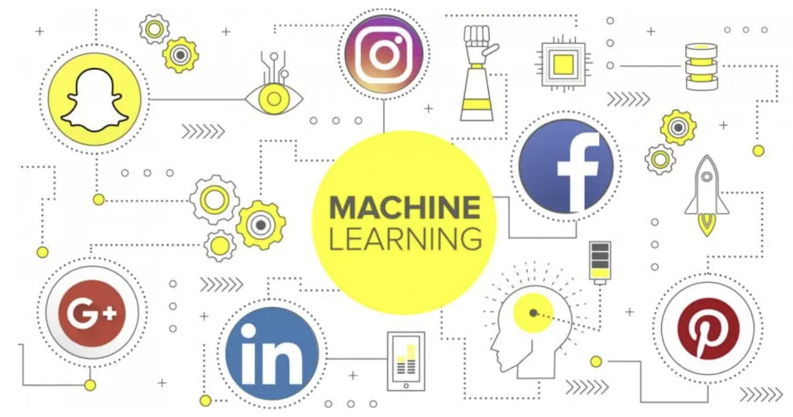

With the rise of the internet 2.0 facilitated by companies such as facebook and instagram. Companies were able to grow massive followings on social media and drive tons of traffic to their websites. With traffic comes data, and with data comes the question of what to do with it and how to extrat meaningful business insights from it. With the rise of machine learning, much of this data that us to be considered not very useful can be used in machine learning models to create more accurate predictions about lead flow, forecasting and user aquisition just to name a few.

AI & ML Tools
There are a number of companies that are developing soluiotns in marketing from copy and blog posts to graphic design generated from powerful machine learning and artificial inteligence models. These programs are being utilized everyday to leverage productivity in businesses across the world. These tools level the playing field between large and small business in many areas allowing for a more competitve market place for the consumer. The ultimate downside to this is yet another subscription that businesses are locked into with few or no alternatives.
ScribeHow - Creates Step by Step Guides From Video
If you have have written an SOP or created any type of docuementation, you know how meticulous the process can be. This software allows you to take any video that you record and turn it into a step by step guide for any process or system that you are designing, removing all of that busy work. This can be extremly useful for anything from onboarding employees to creating SOP’s and assiting customer’s. This is a great software for any business that is quickly expanding and needs save time so they can focus on what really matters, growing the business.
Looka - Logo Design
If you have ever started a business before, you have probably made this mistake. Spending WAY TO MUCH TIME ON A LOGO. Don’t worry, we’ve all been there before, and Looka will hopefully solve this problem for you. It uses advanced ML models to create an entire brand for you from logos to your business card design. This allows you to focus on landing clients rather than trying to modigy the same Canva logo that every other new business has as there logo as well.
Bubble - Build a SaaS Platfrom
Bubble is a no-code solution to developing saas software. It can allow you to go from idea to product launch in just one weeked and a couple of redbulls. It also removes the stress of scaling with their hosted infastructure. This is a no-brainer for quickly developing and deploying a product idea.
DALL*E 2 - Generates Images
Do you need stock photos for a blog post? What about a new social media post or story? Dalle2 has you coverd. It uses sophisticated ml models to create images that you describe. No more photoshots or searching google for hours to get the right photo. This solution allows creators to create more efficently than ever before.
Lumen5 - Video Editing
This tool is extremly powerful, espically if you have limited time or resources. Lumen5 allows you to take text from blog posts, and by using powerful ml models, turn those blogs into videos. This essentially multiplies your by 2 to 5 times. This is because blogs can pratically only be repurosed into tweets and static posts for instagram of facebook. Which of the latter two recieve considerablly less reach today than they use to only a year ago. With video you can create multiple posts for instagram reels, youtube shorts, pinterest idea pins and of course tiktoks. Not to mention the creation of long form videos for both youtube and IGTV. With a well crafted social media plan this can truly multiply your content in unblieveable ways.
Airtbale - Relational Database
Airtable is the end of of machine learning tools because it allows you to gather the data that you need to build custom ML models for your business. It has multiple solutions already built in and applicable to a variety of businesses and departments.
Contentedge - Writes SEO Optimized Content
Everyone wants to rank #1 on google, but no one has the time to put in the work to get there. Countentedge allows businesses that are hard pressed on time and resources to compete with companies that do. By using RNN or recural nerual nets, they have developed models that can write SEO optimized blog posts for your website.
Analytics
As machine learning models become more readily avaliable and accessible to business, it will drastically change how many processes are done internally within a business. Machine learning will contribute to changes in how forecasting and customer conversion is done to internal auditing and logistics. Right now, it is a competitive advantage that businesses can use to have a leg up on their competition, in the future it will become as necessary as a business having a website.
A/B Testing
Using logistic regressions or a classification ML model will allow business to effectively detirmine what web pages or add campaigns have higher conversions rates and deliver better cac’s(Cusotmer Aqusistion Costs’). For the last decade this has only been truly avaliable to companies that have an ad/marketing agency or a deticated data science team.
Logistics & Supply Chain
As ML models become more advanced and companies get better at not only aquiring data but the right data, it will become even more advantageous to use these models to business needs such as shipping needs.
Forecasting
A business can only remain a business as long as it has cash to do so. Money is the lifeblood of any buiness, which is why forecasting is vitally important. Forecasting allows a business to plan out hiring and marketing expenses and will effect the strategies they decide to implement. ML models will be a key tool in forecasting revenues for businesses in the future. And the comapnies that are able to create better and more accurate forecasts will have a distinct advantage to those who do not.
References
Forbes on marketing with Machine Learning
13 Examples of Machine Learning for Marketing